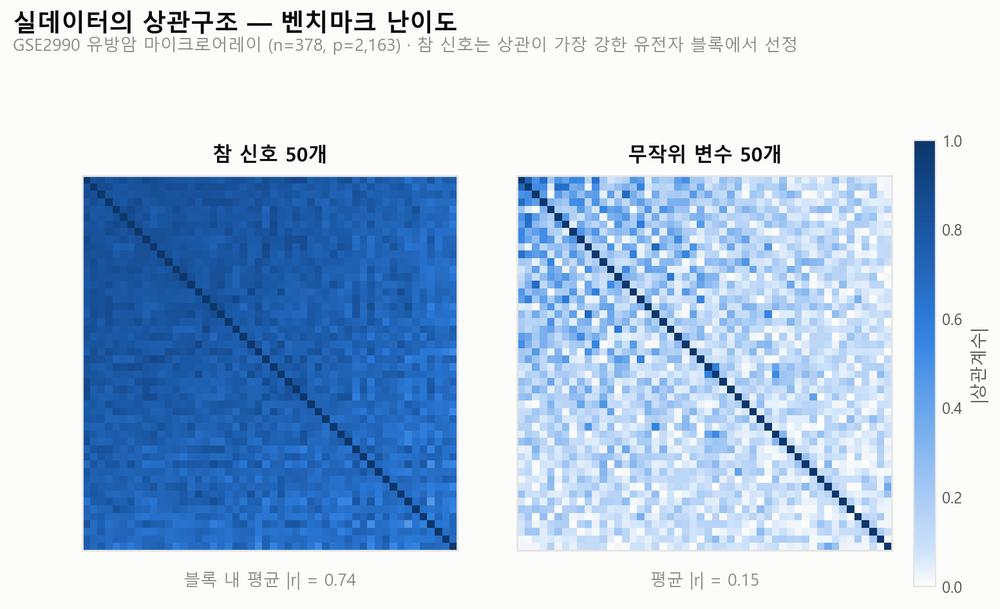
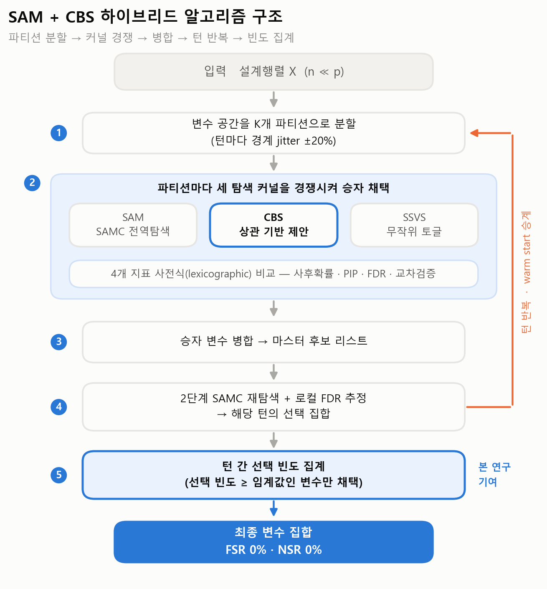
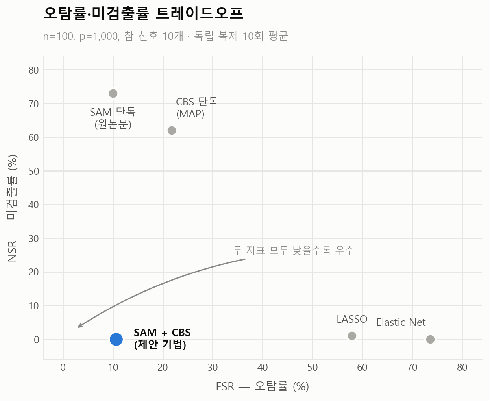
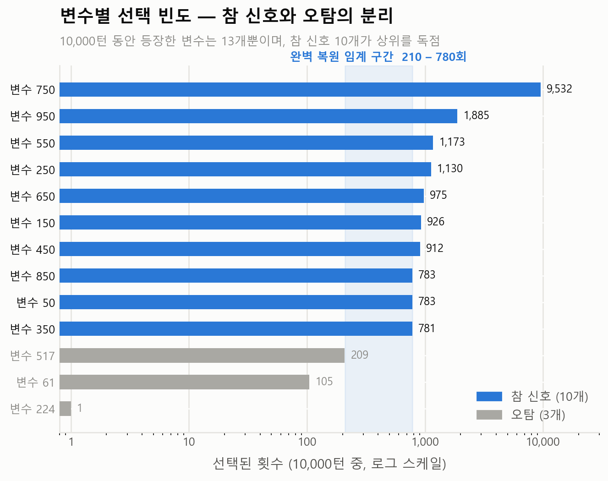
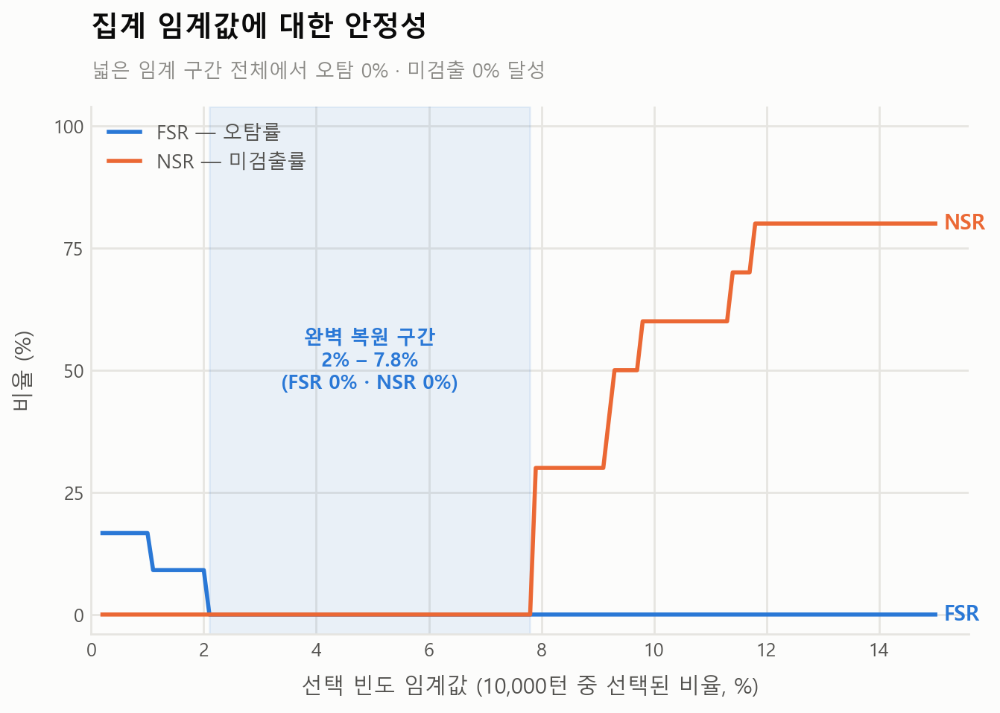

참 신호를 하나도 놓치지 않으면서(NSR 0%) 오탐을 6.9배 줄인 상관 기반 하이브리드 MCMC.
원논문 C 코드 8개 모듈 전면 이식 + CBS 제안분포 설계 · 시뮬레이션 10회 반복 검증 · 개인 연구
01문제 정의
n ≪ p 구조
유전체 데이터는 표본(n=100)보다 변수(p=1,000)가 수십 배 많음. 일반 회귀 추정이 불가능해 변수선택이 분석의 성패를 좌우
기존 알고리즘의 미탐
대표 알고리즘인 SAMC 기반 Split-and-Merge는 실측 결과 참 신호 10개 중 평균 2.7개(NSR 73%) 만 검출
벌점 회귀의 오탐
반대로 LASSO·Elastic Net은 참 신호는 찾지만 오탐이 과도(FSR 58~74%). 오탐 하나가 곧 불필요한 후속 검증 실험 하나
핵심 원인
탐색 커널이 변수 간 상관구조를 무시. 기능적으로 연관된 유전자들이 강하게 상관된 데이터에서 무작위 토글 방식은 상관 블록에 체인이 갇힘

02알고리즘 설계
| 검토안 | 내용 | 판단 |
|---|---|---|
| 1안. 벌점 회귀 계열 채택 | 구현 간단, 검출률 높음. 오탐률 58~74%는 후속 검증 비용 과도 | 기각 |
| 2안. 변수선택 모델 신규 설계 | 개선이 모델 덕분인지 탐색 덕분인지 분리 불가 | 기각 |
| 3안. 원 알고리즘 유지 + 상관 기반 제안분포(CBS) 결합 | 덜 상관된 변수는 추가, 강하게 상관된 변수는 제거·교체. 변경점을 탐색 커널로 한정해 개선 효과를 커널에 귀속 | 채택 |
- CBS 이동 규칙:
add는 현재 선택과 가장 덜 상관된 변수를 추가해 중복 정보 회피,delete/swap은 가장 강하게 상관된 변수를 제거해 다중공선성 해소 - Shrinkage 상관행렬
R = (1-λ)R₀ + λI로 수치 안정성 확보, 기존 무작위 토글(SSVS)과 혼합비 φ로 결합, temperature annealing(2.0 → 1.0)으로 초기 탐색 강화 - 벤치마크: GEO 유방암 마이크로어레이(GSE2990)를 RMA 정규화·클러스터링해 상관이 극도로 강한 상황을 의도적으로 재현한 semi-synthetic 설계
03실행

- 파티션마다 SAM·CBS·SSVS 세 커널을 경쟁시켜 사후확률·PIP·FDR·교차검증 4개 지표의 사전식 비교로 승자를 채택하고, 턴마다 파티션 경계 jitter(±20%)와 warm start로 반복 탐색
- 초기 결과가 기대에 못 미쳤을 때 알고리즘을 바꾸는 대신 10,000턴 실행 로그를 전수 분석. 참 신호는 모두 탐색되고 있으나 단일 턴의 FDR 컷이 이를 탈락시키고 있음을 규명하고(턴별 선택 3~4개 vs 합집합 100% 포함), 턴 간 선택 빈도 집계로 규칙 교체
04결과
| 방법 | 선택 변수 수 | 참 신호 검출 | FSR (오탐률) ↓ | NSR (미검출률) ↓ |
|---|---|---|---|---|
| SAM 단독 (원논문) | 2.7 | 2.7 / 10 | 10.0% | 73.0% |
| CBS 단독 (MAP) | 4.9 | 3.8 / 10 | 21.8% | 62.0% |
| LASSO (10-fold CV) | 29.3 | 9.9 / 10 | 57.9% | 1.0% |
| Elastic Net (10-fold CV) | 42.3 | 10.0 / 10 | 73.6% | 0.0% |
| SAM + CBS 하이브리드 (제안) | 11.3 | 10.0 / 10 | 10.7% | 0.0% |


- 참 신호 검출 100%(NSR 0%)를 10회 반복 전부에서 달성. 평균 선택 변수 11.3개로 참 신호 10개에 근접
- FSR 10.7%로 LASSO(57.9%) 대비 5.4배, Elastic Net(73.6%) 대비 6.9배 낮음. 기존 SAM 단독 대비 검출률 2.7개 → 10.0개

- 빈도 집계 규칙은 임계값 2.1~7.8% 전 구간에서 완벽 선택(FSR 0% · NSR 0%) 을 재현. 특정 임계값을 골라 만든 결과가 아님을 스윕으로 입증, 10,000턴 중 616개 턴은 단독으로도 완벽 해
- 결과가 임계값 하나에 의존하지 않아 실무 적용 시 튜닝 부담이 낮고, 상관이 강한 데이터라면 유전체 외 도메인에도 같은 커널 적용 가능
세부 기록
사용 기술 · Python(NumPy·SciPy·scikit-learn) / R(glmnet·affy/RMA·caret·igraph) / C 코드 이식 / Metropolis-Hastings·SAMC·베이지안 변수선택(g-prior, PIP)·로컬 FDR
성능 최적화 · 비용함수를 Gram 행렬 사전계산 + Cholesky 분해로 재작성, BLAS 스레드 고정과 부분행렬 캐싱으로 10,000턴 대규모 실행 확보
실데이터 파이프라인 · GSE2990 CEL 원본 → RMA 정규화 → IQR 필터 → 상관 기반 중복 제거(|r| > 0.5) → 계층적 클러스터링(K=20), 클러스터 내부 평균 |r| 최고 블록에 참 신호 배치
재현 근거 · 모든 수치는 원본 실행 로그에서 재계산. 입력 데이터 MD5 해시 대조로 방법 간 동일 조건 비교 검증
검증 범위 · 단일 시나리오(S1, n=100 / p=1,000 / 참 신호 10개) 10회 반복 기준. 다양한 n·p 조합 일반화와 로지스틱 확장은 후속 과제